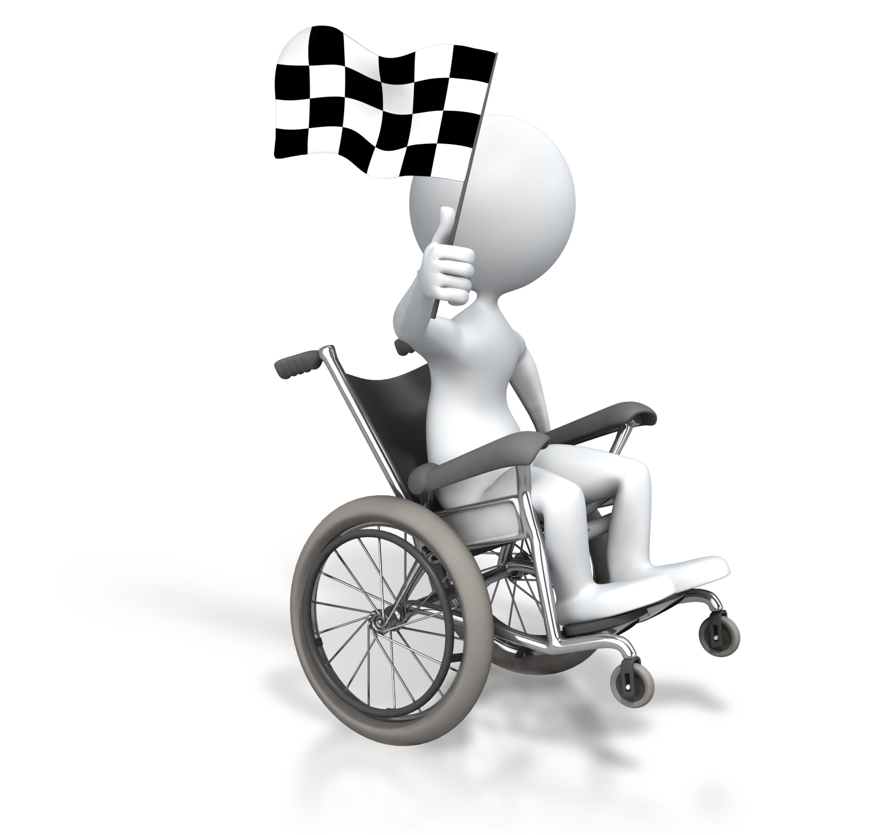

Alteração completa ou parcial de um ou mais segmentos do corpo humano, acarretando o comprometimento da função física, apresentando-se sob a forma de paraplegia, paraparesia, monoplegia, monoparesia, tetraplegia, tetraparesia, triplegia, triparesia, hemiplegia, hemiparesia, ostomia, amputação ou ausência de membro, paralisia cerebral, nanismo, membros com deformidade congênita ou adquirida, exceto as deformidades estéticas e as que não produzam dificuldades para o desempenho de funções;
ACESSIBILIDADE - Deficiencia Motora
Deficiência motora é uma disfunção física ou motora, a qual poderá ser de carácter congénito ou adquirido. Desta forma, esta disfunção irá afectar o indivíduo, no que diz respeito à mobilidade.
Deficiência Física:
Deficiência Múltipla:
Associação de duas ou mais deficiências;
Barreiras que devem ser eliminadas
Atitudinal: preconceitos, estigmas, estereótipos e discriminações que marginalizam e excluem as pessoas com deficiência;
Arquitetônica: obstáculos que impedem o acesso e usos dos ambientes, espaços e equipamentos de uso individual ou coletivo;
Comunicacional: obstáculos que impedem a comunicação interpessoal, a leitura e a produção escrita por parte da pessoa com deficiência ou necessidade educacional específica;
Metodológica: métodos e técnicas pedagógicas de estudo, de trabalho, de ação comunitária e de educação não formal, que impedem a pessoa com deficiência ou necessidade educacional específica de aprender;
Programática: obstáculos invisíveis em políticas públicas, legislação e nas normas e regulamentos institucionais, que contribuem para o processo de segregação e exclusão das pessoas com deficiência e necessidades educacionais específicas.
Allan Gaiteiro | Gabriel Siqueira | Lucas Basqueira